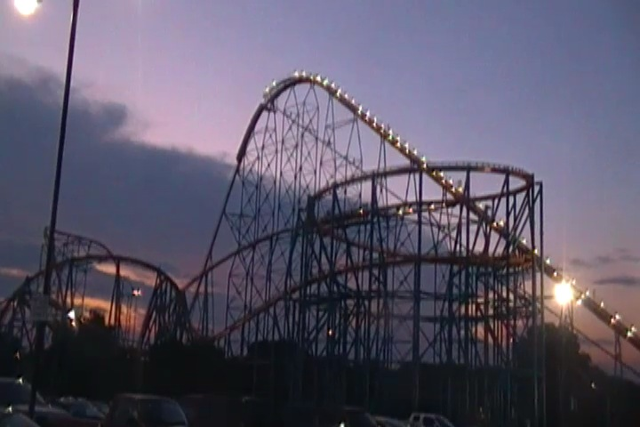
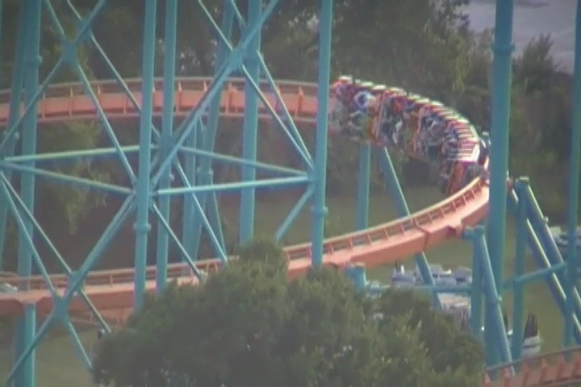
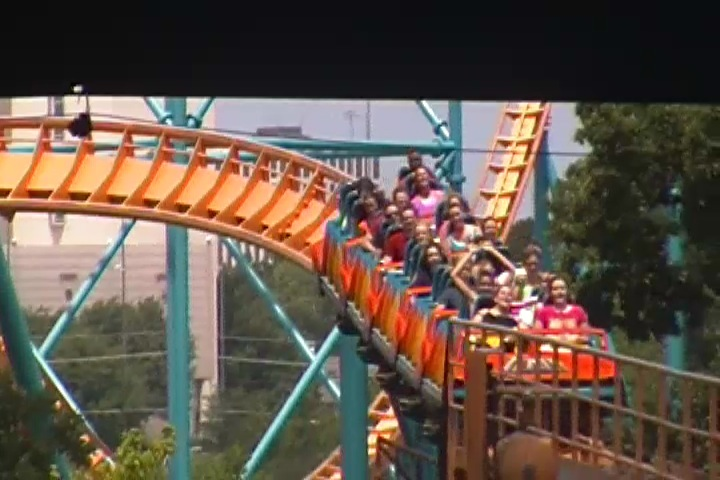
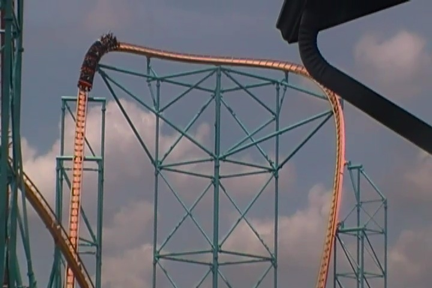
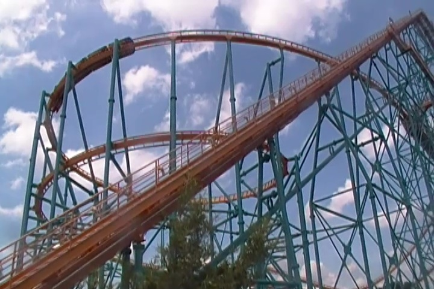

| |
Titan Review

We're here at Six Flags Over Texas. Today's ride we'll be reviewing for you is Titan. This is a very unique coaster as it's one of the only Giovonola coasters in the world. Though it honestly doesn't seem that special to me since it's a near-clone of Goliath which is at my home park, Six Flags Magic Mountain. Only this version has a bonus helix. Yay! Something extra! =) But for most of you, this is a pretty unique ride. Once you get in the car and pull down the orange funny lap bar, you make a U-Turn right into the lifthill. Then, you climb. Higher and Higher you go. If you dare, look to your right and get a good view of SFOT. Once you get to the top, the ride suddenly slows down. The anticipation just grows from here, as you slowly lean foreward, you can just see mother earth opening her jaws, ready to swallow us whole. We fall. The speed comes rushing on! Down, Down we go until we just fly through a tunnel. Although we're only in there for a second, it's still a lovely second underground. Then we come flying out of there and into a turnaround. Up there, we get a lovely view of the parking lot. But before we can see much, we're falling back down to the groud. After that, we rise up into a big heap of airtime. It may just be floater air, but enjoy being out of your seat while you can because once our asses get back in the seat, that's where they're staying. Then we roar up into the bonus helix. Now some of you may be thinking "Blah, it's one measly helix. It's not going to make a difference." And I thought that too before I rode it. WRONG!!!! We just SHRED through that helix. We plow through it and get so many Gs. It's just as powerful as the famous blackout helix. Do not underestimate the bonus helix. We then rise up into the midcourse brakes. However, this is a pretty nasty midcourse brake run. It almost STOPS the train. It's that powerful. All that speed we gained during that nice first drop is dumping and we're about to replace them with a plateful of positive Gs. After that disgusting midcourse brake run, you start to tilt to the side, it's at this point you see that the track get all spaghettiish from here. After that first spiral down, we have gained a little bit of the speed we lost in the midcourse brakes, but it's still nothing compared to what we had before. After that, you soar up into an overbanked turn. We gain a little more speed as we get closer to the ground. And then, here comes the most powerful part of the ride. THE FAKE HELIX OF DEATH!!!!!! And it's not just a fun joke fake helix of death like Goldrusher or Westcoaster. It's a pretty powerful helix of death. It's powerful enough to make some losers black out! We then roar through that fake helix of death. Faster and Faster we go! Closer and Closer to the ground. Don't even think about getting any airtime in this part of the ride. And then, you see a light. You come flying out of the helix of death and into another overbanked turn. Of course, it's nothing after all that, but it's still fun. After that, you come twisting out of the mess and reach for the final brake run. Titan is definitely a fun ride. While it's not an airtime machine, It's still pretty fun and I'd definitely recommend riding it.
8/10
Location: Six Flags Over Texas
Opened: 2001
Built by: Giovanola
Last Ridden: July 18, 2013
Titan Photos





Home
|